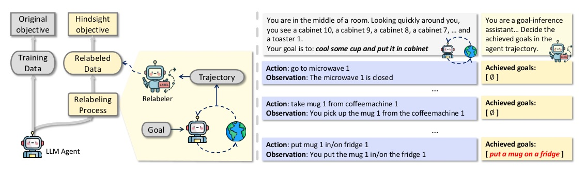
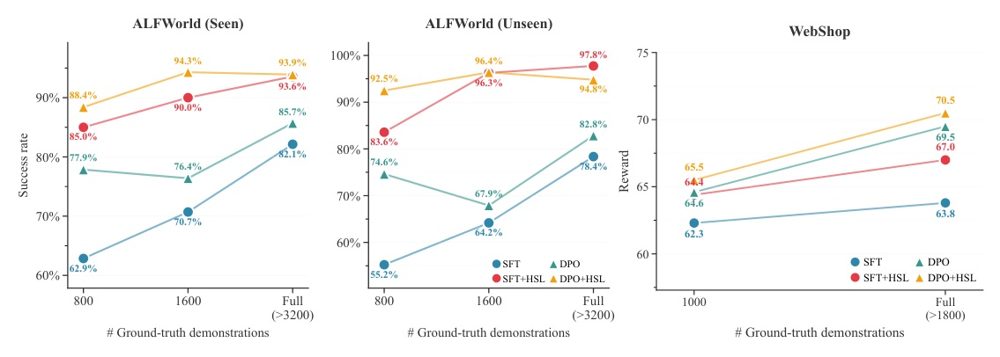
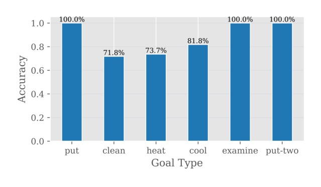
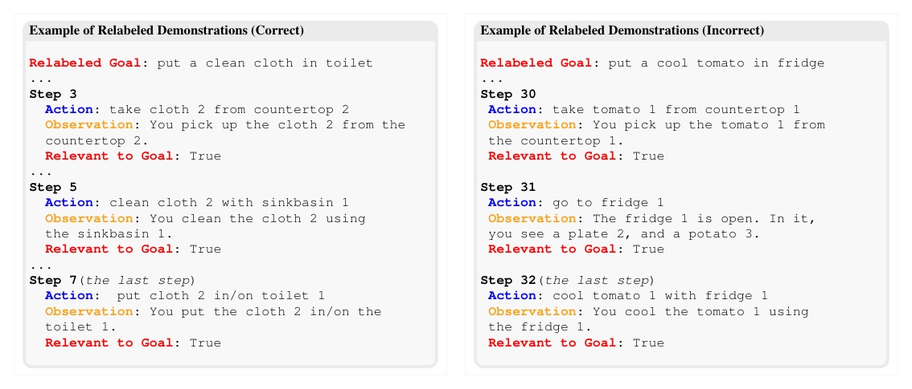

把 LLM agent「失敗」rollout 裡其實完成的目標，重新標成可訓練的成功示範。
HSL 的核心不是「生成更多示範」，而是承認 agent 已經在探索中做對了一些事。
Auxiliary LLM 事後讀完整 trajectory，找出所有 actually achieved goals；target agent 再用這些 relabeled successful demonstrations 做 post-training。

Theorem 1 的訊息：HSL 會幫忙，前提是 hindsight expert 的 coverage 與 optimality 夠好。
Upper bound = ground-truth SFT KL + relabeled-demo KL scaled by κE←H + suboptimality δE。因此 on-policy refresh、masking、reweighting 是機制核心。
| Benchmark | Horizon | Goal space | Metric |
|---|---|---|---|
| ALFWorld | 40 | diverse; multiple achievable goals | Success Rate |
| PlanCraft | 30 | single task type but craft multiple items | Success Rate |
| WebShop | 10 | one achievable goal per trajectory | Task Score = 100 x reward |
| Method | ALF seen | ALF unseen | PlanCraft | WebShop |
|---|---|---|---|---|
| SFT | 82.14 | 78.36 | 70.00 | 63.81 |
| DPO | 85.71 | 82.84 | 71.25 | 69.54 |
| SFT+HSL | 93.57 | 97.76 | 75.12 | 66.97 |
| DPO+HSL | 92.86 | 94.78 | 75.42 | 70.52 |

| Variant @ ALFWorld Unseen | 800 demos | 1600 demos | Full data | Interpretation |
|---|---|---|---|---|
| SFT+HSL full | 83.6 | 96.3 | 97.8 | all achieved goals + mask + weight |
| RelabelFailure | 67.9 | 72.4 | 70.2 | only final failed-goal relabeling |
| UniWeight | 80.0 | 88.1 | 93.3 | coverage bias remains |
| NoMask | 58.2 | 82.1 | 90.3 | imitates irrelevant detours |
90% relabel accuracy 是 HSL 成立的經驗支點。
作者人工抽查 200 筆 relabeled demos，其中 180 筆正確；這支撐「hindsight relabeling 比直接執行任務容易」的假設。


“HSL is sample-efficient: on ALFWorld, it surpasses baselines trained on the full dataset while using only one quarter of the ground-truth demonstrations.”
HSL 的重點是 sample efficiency：在 ALFWorld，用不到四分之一 ground-truth demonstrations 就超過 full-data baseline。Abstract p.1
這句是整篇 paper 的 punchline，也是 deck 主線選擇 sample-efficiency 作為主結果的原因。
“The gap shrinks further as the occupancy coverage and the optimality of πH improve.”
當 hindsight expert 的 occupancy coverage 與 optimality 提升時，agent-expert gap 會進一步縮小。§3.4 p.6
這個 bound 解釋了 reweighting（coverage）與 masking（optimality）為什麼是必要元件。
“Of these, 180 are correct, yielding an accuracy of 90%...”
200 筆人工抽查中 180 筆 relabel 正確，zero-shot relabel accuracy 達 90%。§4.4 p.10
如果 relabeler accuracy 明顯下降，HSL 的 δ_E 會變大，NoMask / weak base agent 的問題也會被放大。
“The unintended goals may have low value for the users or even be malicious.”
意外完成的目標不一定對使用者有價值，甚至可能是惡意目標。Limitations p.17
這是把 HSL 推到 open-world agents 前必須補上的 governance layer。
今天的 takeaway：別急著丟掉 failed trajectories；先問它們在 hindsight 裡完成了什麼。